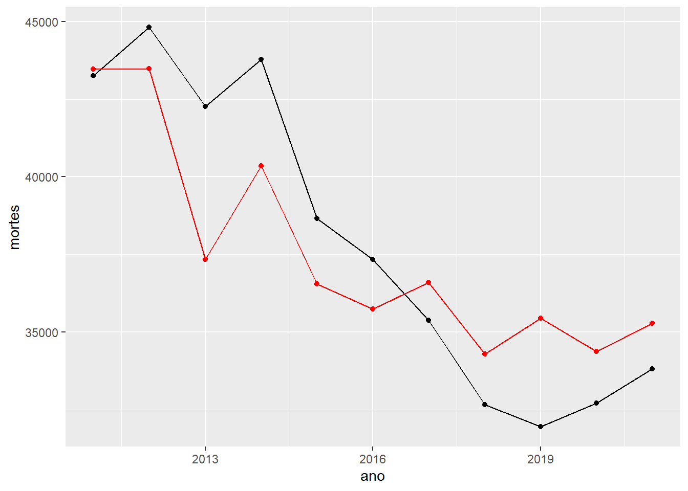

# A tibble: 3 × 3
.metric .estimator .estimate
<chr> <chr> <dbl>
1 rmse standard 2452.
2 mae standard 2098.
3 rsq standard 0.772
randforest_wflow_fit
══ Workflow [trained] ══════════════════════════════════════════════════════════
Preprocessor: Recipe
Model: rand_forest()
── Preprocessor ────────────────────────────────────────────────────────────────
2 Recipe Steps
• step_naomit()
• step_normalize()
── Model ───────────────────────────────────────────────────────────────────────
Ranger result
Call:
ranger::ranger(x = maybe_data_frame(x), y = y, mtry = min_cols(~3, x), num.trees = ~1000, num.threads = 1, verbose = FALSE, seed = sample.int(10^5, 1))
Type: Regression
Number of trees: 1000
Sample size: 12
Number of independent variables: 1
Mtry: 1
Target node size: 5
Variable importance mode: none
Splitrule: variance
OOB prediction error (MSE): 20799933
R squared (OOB): 0.1415661
Visualização
linear_pred |>ggplot(aes(x = ano, y = mortes)) +geom_line() +geom_point() +geom_line(aes(y = .pred), color ="red") +geom_point(aes(y = .pred), color ="red")
randforest_pred |>ggplot(aes(x = ano, y = mortes)) +geom_line() +geom_point() +geom_line(aes(y = .pred), color ="red") +geom_point(aes(y = .pred), color ="red")

randforest_pred |>ggplot(aes(x = mortes, y = .pred)) +geom_point() +geom_abline(intercept =0, slope =1, color ="red")